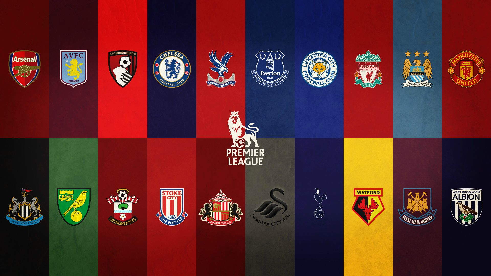
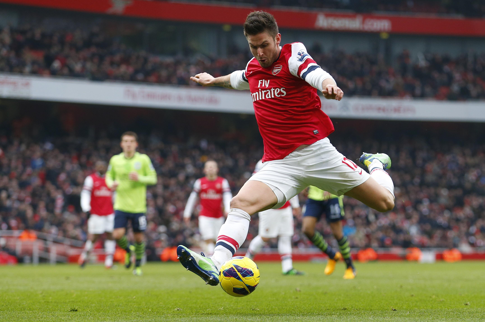
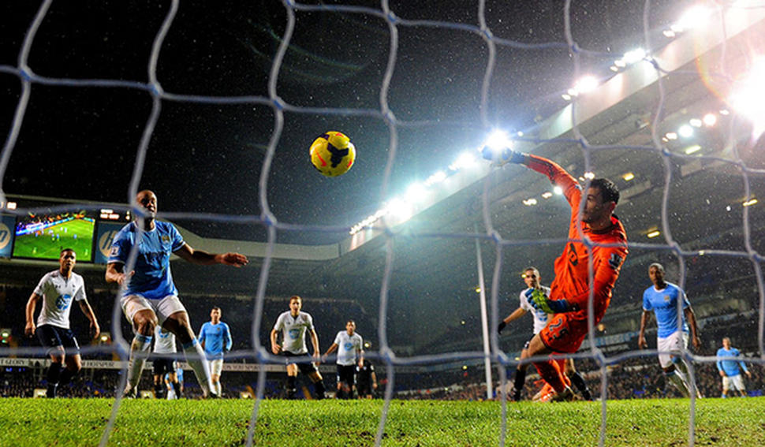
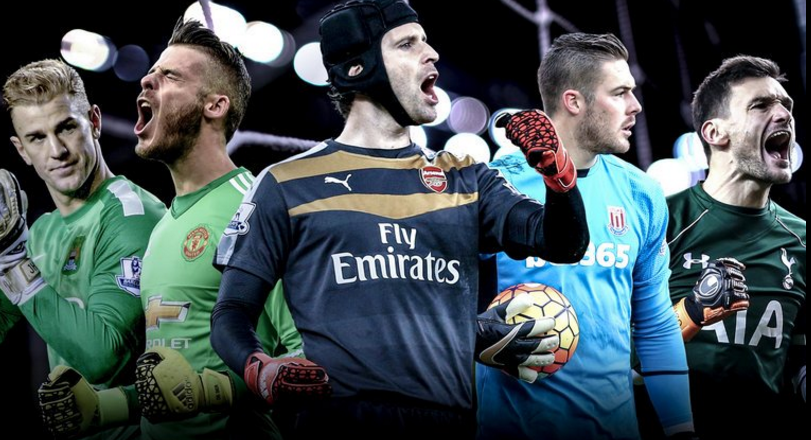

The Dataset
The Premier League is an English Football League, and is the primary football league in the UK. This Dataset details the data from the 2015 - 2016 season for the Premier League. Each row in this dataset is a match played between two teams, and each column in the dataset is some form of information or statistic for that match such as the home/away team, home/away goals, home/away shots on target, assits, etc.
Motivation
My main motivation for doing this dataset is because I’m a fan of soccer and I like watching the Premier League (my favorite club/team is Manchester City). I want to analyze the data because I want to see how certain clubs performed against other clubs during the season. I also want to make some in-depth shot-type analysis. Data is a very important aspect of sports especially when it involves the performance of the team or its players, so I feel this dataset will help me with creating visuals that can be analyzed for performance breakdowns and game reviews.
The Visualizations
How Well Do the Teams Perform Against Each Other?

Description:
This Heatmap depicts the performance of teams against other teams in the league.
The colors of the cells coordinate with the performance of the team on the y-axis
against the team on the x-axis. Green values mean that the team performs better
than the opposing team. Where as a red value means that the team doesn't perform better than
the other team. White values mean that the performance values equaled out.
The performance is evaluated in terms of goals scored against the other team. For this implementation, each team has their own scorecard detailing a score value against the other teams. If Team A wins against Team B, then a score value is calculated based on the Team A Goals – Team B Goals. This value is added for Team A's score against Team B's and is deducted for Team B's score against Team A. This would be reversed if Team B was the victor. In the event of a tie, no team recieves any points.
Findings:
Arsenal performed pretty well against most teams, with their main enemies being
Southampton and Chelsea. Leicester also performed fairly well against most of the
teams, although sometimes they were barely better with a value of 1. Teams like Newcastle
and Sunderland performed poorly against a lot of the other teams.
Who's the Most Accurate Team?
Some definitions for this visualization:
Shots On Target: Shots that would or does enter the goal post.
Shots Off Target: Shots that would not or does not enter the goal post.
Description:
Now for this visualization we are depicting the accuracy as a percentage of the total
shots each team attempted during the season. Hovering over each bar gives the number
of shots each bar represents as well as the percentage that amount makes up compared
to the total number of shots.
Findings:
The average accuracy for on target shots across all the teams was 45.25%. The most
accurate team was Tottenham Hotspur F.C. (Spurs) with an accuracy of 56%. However,
if you look at the number of shots they had off target, you can see that the total
is more than any other team had on target. The least accurate team was Norwich
City F.C. (Norwich) with an accuracy of 40%.
When Does Each Team Score More Goals?

Description:
This visualization shows when each team scored their goals during the season.
Each y-axis depicts a time section of a match. "0-15" would be the first 15 minutes
of the match, "15-30" would be the next 15 minutes, and so on. The first half of a
match is the first 45 minutes, and the second half of the match is the second 45
minutes (45 - 90). For each half, if the referee decides that more time needs to be
added to the clock then there are extra minutes. That's what the y-axis "45+extra"
and "90+extra" represent.
Each line is a different team. If you hover a line a tooltip will pop up that will tell you what team you are currently on. If you click the line, this will brush the lines so that the line you clicked will only have the colors and the other lines will transition to a barely visible gray. This helps analyze a single team's score history.
Findings:
It's actually common for teams (ex. Manchester City) to score more towards the
beginning of each half.
What Team Has the Better Defense?
Some definitions for this visualization:
Blocks: When player stops an opposing player from getting the ball.
Clearances: Whenever a player hits or kicks the ball away from the goal of his or her own team.
Opponent Shots: The opposing teams shots on target against the team.
Saves: Whenever the Goalkeeper stops, catches, or punches a ball that would have entered the goal and scored for the opposing team.
Description:
For this visualization we are analyzing the different defensive stats of each team.
The size of each circle correlates to the number of shots the opposing teams were
able to get on target. The fill correlates to the number of blocks that team did.
If you hover over each circle, a tooltip will pop up which will give you the data
for each bubble.
Findings:
Sunderland had a lot of defensive plays going on in the season. However, they also
had the most opponent shots on them, which may be a correlation. Norwich had the
most clearances which seemed to have had an impact because they don't have too many
opposing shots on them, and therefore, also less saves from the goalkeeper.
Links
Link to the dataset here.
Premier League website.
Premier League Logo Image found here.
{kind=link}
Team Badge Tiles from here.
Image for the player shooting the ball found here.
Image for "When Does Each Team Score More Goals?" found here.
Image of the goalkeepers taken from here.
All the badge links: Arsenal, Aston Villa, Bournemouth, Chelsea, Crystal Palace, Everton, Leicester, Liverpool, Manchester City (New Badge), Manchester United, Newcastle, Norwich, Southampton, Spurs, Stoke, Sunderland, Swansea, Watford, West Brom, West Ham.
{kind=link}
{kind=link}
.svg){kind=link}
{kind=link}
{kind=link}
{kind=link}
{kind=link}
{kind=link}
{kind=link}
{kind=link}
{kind=link}
{kind=link}
{kind=link}
{kind=link}
{kind=link}
{kind=link}
{kind=link}
{kind=link}
{kind=link}
{kind=link}
License for Dataset
Copyright (c) 2016 Suhas SG Permission is hereby granted, free of charge, to any person obtaining a copy of this data and associated files for ONLY private or personal use, provided you credit the FAPL as its source and add the Website address: www.premierleague.com. The above copyright notice and this permission notice shall be included in all copies or substantial portions of the data or any related analysis. THE DATA IS PROVIDED "AS IS", WITHOUT WARRANTY OF ANY KIND, EXPRESS OR IMPLIED, INCLUDING BUT NOT LIMITED TO THE WARRANTIES OF MERCHANTABILITY, FITNESS FOR A PARTICULAR PURPOSE AND NONINFRINGEMENT. IN NO EVENT SHALL THE AUTHORS OR COPYRIGHT HOLDERS BE LIABLE FOR ANY CLAIM, DAMAGES OR OTHER LIABILITY, WHETHER IN AN ACTION OF CONTRACT, TORT OR OTHERWISE, ARISING FROM, OUT OF OR IN CONNECTION WITH THE DATA OR THE USE OR OTHER DEALINGS IN THE DATA.